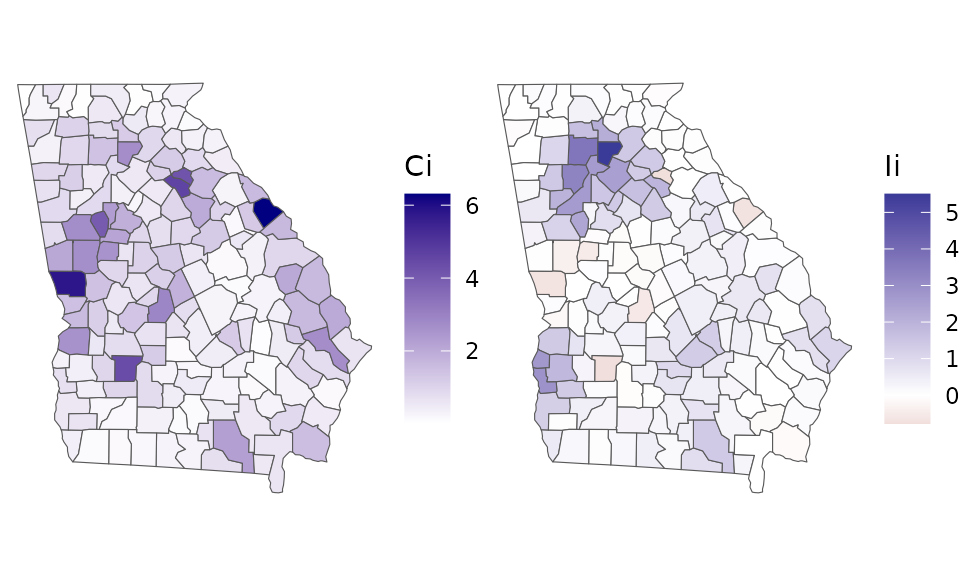

Exploratory spatial data analysis
September 13, 2021
Source:vignettes/measuring-sa.Rmd
measuring-sa.RmdThis vignette walks through exploratory spatial data analysis (ESDA) functionality in the geostan package, which includes methods for measuring and visualizing global and local spatial autocorrelation (SA). It includes a short review of the philosophy of ESDA, and ends with a set of diagnostic plots for spatial models.
Getting started
From the R console, load geostan and the georgia data set.
georgia is a simple features (sf) object with estimates of county population characteristics from the American Community Survey (ACS) for the five year period spanning 2014-2018. Their corresponding standard errors are also here. The column college contains ACS estimates for the percent of the population age 25 and older that has obtained a college degree or higher; the standard errors of the survey estimates are in the column named college.se.
Exploratory spatial data analysis (ESDA)
Good (1983) contrasts exploratory data analysis (EDA) with confirmatory analysis as follows:
Confirmatory statistics consists of experimental design, significance testing, estimation, and prediction, whereas EDA is concerned mainly with the encouragement of hypothesis formulation. (284)
EDA techniques include all sorts of visual methods (histograms, scatter plots, etc.) that take a set of data, extract a limited summary of it (suppressing most other information), and then return a visual depiction that brings certain dimensions of (non-) variation to the foreground. As Good (1983) continues, “techniques of descriptive statistics are designed to match the salient features of the data set to human cognitive abilities” (287). Rather than ‘data-driven’ or descriptive, the investigator is explicitly interested in patterns that could be connected to a substantively interesting (“explicable”) hypothesis. EDA is also iterative: given some model has been built (or a hypothesis is entertained), one starts the process again by examining residuals and other features of the model. EDA thus suggests a process for model criticism and improvement by way successive approximation (see Gabry et al. 2019).
Exploratory spatial data analysis (ESDA) (Koschinsky 2020) includes all of this but also involves techniques that are of particular importance for spatially referenced data. ESDA involves tools for visualizing (residual) spatial patterns, decomposing spatial patterns into different elements across the map, and measuring the extent of spatial patterning in the data. Helpful ESDA tools draw out different spatial patterns from the data and communicate them in ways that are comprehensible to the human mind.
Spatial diagnostic summary
If we pass any variable x and its corresponding spatial object (e.g., simple features) to the sp_diag function, it returns a histogram, Moran scatter plot, and map of the estimates:
sp_diag(georgia$college, georgia, name = "College (%)")
The Moran plot is a visualization of the degree of SA: on the horizontal axis are the college estimates while the vertical axis represents the mean neighboring value. The Moran coefficient, an index of SA, is printed at the top (MC=0.42) The expected value of the MC under no SA is \(-1/(n-1)\) (Chun and Griffith 2013). The map shows that the contrast between the greater Atlanta metropolitan area and the rural counties is a prominent, if not the predominant, spatial pattern.
Spatial weights matrix
To summarize spatial information for the purpose of data analysis, we use an \(N \times N\) matrix, which we will call \(W\). Given some focal point/area on the map, the term “neighbor” will refer to any other area that is considered geographically ‘near’. The meaning is context specific, but with areal data the most common choice is to say that all areas whose borders touch each other are neighbors. Sometimes a distance threshold is used.
The value stored in the element \(w_{ij}\) expresses the degree of connectivity between the \(i^{th}\) and \(j^{th}\) areas. The diagonal elements of matrix \(W\) are all zero (no unit is its own neighbor), and all pairs of observations that are not neighbors also have weights of zero. There are a variety of ways to assign weights to neighbors. The binary coding scheme assigns neighbors a weight of one. In the row-standardized scheme, all neighbors of the \(i^{th}\) area have a weight of \(w_{ij} = \frac{1}{\delta_i}\) where \(\delta_i\) is the number of areas that neighbor the \(i^{th}\) area. Weights can also be assigned by taking the inverse of the distance between neighboring areas.
The shape2mat function takes a spatial object (simple features or spatial polygons) and creates a sparse matrix representation of the neighborhood structure.1 For a row-standardized coding scheme, we use style = "W".
W <- shape2mat(georgia, style = "W")This function uses the spdep::poly2nb function to create the neighborhood structure.
The Moran scatter plot
We can create a Moran scatter plot using the moran_plot function. To reproduce the Moran plot given by sp_diag, we need to use the row-standardized spatial weights matrix:
moran_plot(georgia$college, W)Similarly, we can calculate the Moran coefficient using mc:
mc(georgia$college, W)
#> [1] 0.422Under particular conditions (the variable has been centered by subtracting its own mean from each value, and a row-standardized weights matrix is used), the Moran coefficient is equivalent to the slope of the regression line on the Moran plot.
If we use a binary spatial weights matrix (style = "B"), the vertical axis will show the sum of surrounding values:
A <- shape2mat(georgia, "B")
moran_plot(georgia$college, A)When a binary matrix is used, counties with more neighbors contribute more to the MC than counties with fewer neighbors.
The quadrants of the Moran plot are helpful for classifying observations. The first (top right) quadrant represents counties with above-average values that are also surrounded by above-average values; the third (bottom left) quadrant contains low values surrounded by low values. Points in the first and third quadrants represent positive SA. The second (top left) and fourth (bottom right) quadrants represent negative SA: they contain spatial outliers, which are dissimilar from their neighbors.
The Moran coefficient (MC)
The formula for the Moran coefficient (MC), an index of SA, is \[MC = \frac{n}{K}\frac{\sum_i^n \sum_j^n w_{ij} (y_i - \overline{y})(y_j - \overline{y})}{\sum_i^n (y_i - \overline{y})^2} \] where \(K\) is the sum of all values in the spatial connectivity matrix \(W\) (i.e., the sum of all row-sums: \(K = \sum_i \sum_j w_{ij}\)).
The MC is related to the Pearson product moment correlation coefficient. (Chun and Griffith 2013, 10). Whereas the correlation coefficient ranges from -1 to 1, the MC does not, except under special circumstances—the range usually expands somewhat. Its expected value under a condition of zero SA is not zero, but instead, \(-1/(n-1)\) (which approaches zero as \(n\) increases).
It is also important to understand that the MC does not ‘behave’ similarly to the correlation coefficient. Specifically, for moderate to high levels of autocorrelation, the MC may not be highly sensitive to changes in the degree of autocorrelation; it is more powerful for detecting the presence of autocorrelation. This issue motivated development of an approximate estimator of the spatial autocorrelation parameter from the simultaneous autoregressive (SAR) model, called APLE (approximate-profile likelihood estimator) (Li, Calder, and Cressie 2007). While it is limited to smaller data sets, it is another helpful tool (see ?geostan::aple).
The Geary ratio (GR)
The formula for the Geary ratio (GR, or Geary’s C), another index of SA, is \[GR = \frac{(n-1)}{2K} \frac{\sum_i^n \sum_j^n w_{ij} (y_i - y_j)^2 }{\sum_i (y_i - \overline{y})^2}\] The weighted sum in the numerator of the GR contains the squared differences between each observation and all of their respective neighbors. This means that local outliers and negative SA will cause the numerator to increase. By contrast, positive SA causes the numerator to become smaller. The denominator in the GR is the total sum of squared deviations from the mean of \(y\). This means that if there is no SA at all, the GR has an expected value of 1. As the degree of positive SA increases, the GR decreases towards zero; negative SA causes the GR to increase beyond 1. (\(1-GR\) is perhaps a more intuitive value (Unwin 1996).)
The GR and the MC complement each other mathematically (Chun and Griffith 2013, 12): the GR can be re-written as \[GR = \mathcal{G} - \frac{n-1}{n}MC\] where \[\mathcal{G}=\frac{n-1}{2K} \frac{\sum_i^n (y_i - \overline{y})^2 \big(\sum_j^n w_{ij}\big)}{\sum_i^n (y_i - \overline{y})^2}\] The GR is more sensitive than the MC to negative SA, and, as such, it is sensitive to local outliers. When a variable does not contain influential local outliers, the sum of its GR and MC values will be equal to about 1.
The following code calculates the MC and GR for the Georgia county estimates of percent college educated. Both of them indicate a moderate degree of positive SA:
Local indicators of spatial association (LISAs)
Local indicators of spatial association (LISA) were introduced by Anselin (1995) for ESDA. The LISA is a class of local SA statistics. Every LISA is related to a global SA index, such as the MC and GR. geostan contains functions for calculating local Geary’s C and a local version of the MC, known as local Moran’s I.
The idea of a local statistic is to index the amount and type of SA present at every discrete location on the map (e.g., for every county). The sum of all these LISA values is proportionate to its corresponding global SA index.
Local Moran’s I for the \(i^{th}\) unit is \[I_i = z_i \sum_j^n w_{ij} z_j\] where \(z\) is the original variable in deviation form (\(z_i = y_i - \overline{y}\)), and \(W\) is the spatial connectivity matrix. These values are related to the Moran scatter plot: positive \(I_i\) values indicate positive SA, corresponding to quadrants I and III of the Moran scatter plot. Negative \(I_i\) values indicate negative SA, which appear in quadrants II and IV of the Moran scatter plot.
The local Geary statistic \(C_i\) is the weighted sum of squared differences found in the numerator in the GR: \[C_i = \sum_j^n w_{ij} (y_i - y_j)^2 \]
The local Geary statistic is very sensitive to local outliers (negative SA), more so than local Moran’s I. This makes these two LISAs complementary: \(I_i\) is most useful to visualizing clustering behavior, whereas \(C_i\) is useful for visualizing local outliers. By default, geostan will first scale \(y\) using z <- scale(y, center = TRUE, scale = TRUE) before calculating either of these LISAs.
The lisa function returns local Moran’s I values and indicates which quadrant of the Moran plot the point is found:
W <- shape2mat(georgia, "W")
x <- log(georgia$income)
Ii <- lisa(x, W)
head(Ii)
#> Li type
#> 1 0.139 LL
#> 2 0.574 LL
#> 3 1.327 HH
#> 4 1.473 HH
#> 5 -0.688 HL
#> 6 3.282 HH“HH” indicates a high value surrounded by high values; “LL” is a low surrounded by low values, and so on.
The local Geary statistic can be calculated using the lg function:
Maps of the two local statistics highlight different qualities: \(I_i\) draws attention to clustering, whereas \(C_i\) draws attention to discontinuities and outliers:
Ci_map <- ggplot(georgia) +
geom_sf(aes(fill=Ci)) +
# or try: scale_fill_viridis()
scale_fill_gradient(high = "navy",
low = "white") +
theme_void()
Li_map <- ggplot(georgia) +
geom_sf(aes(fill=Ii$Li)) +
scale_fill_gradient2(name = "Ii") +
theme_void()
gridExtra::grid.arrange(Ci_map, Li_map, nrow = 1)
Due to their complementary strengths, these two indices are best used together.
Effective sample size
We can also consider what these spatial patterns mean in terms of the information content of our data; that is, the impact that SA might have on the amount of evidence that can be garnered from this data in an analysis. This is often described as effective sample size (ESS).
The n_eff function provides an approximate measure of ESS for spatially autocorrelated data (Griffith 2005). It is based on the simultaneous autoregressive (SAR) model. The function requires a value of the SA parameter, \(\rho\), from the SAR model and the number of observations in our data set. We can get a rough measure of ESS for a variable using the following code:
x <- log(georgia$income)
rho <- aple(x, W)
n <- nrow(georgia)
ess <- n_eff(rho = rho, n = n)
c(nominal_n = n, rho = rho, MC = mc(x, W), ESS = ess)
#> nominal_n rho MC ESS
#> 159.00000 0.70100 0.49800 23.34735This tells us that, given the degree of SA in the ICE estimates (\(\rho = .70\)), our nominal sample size of 159 observations has the same information content as about 23 independent observations.
This should provide some idea as to why it is so perilous to use conventional (non-spatial) statistical methods with spatial data. The odds of observing a strong correlation between any arbitrary pair of spatially patterned variables can be far greater than conventional methods report.
Model diagnostics
The sp_diag function can also be used to evaluate spatial models. One of the purposes of the function is to identify spatial patterns in the model residuals, because SA violates a core assumption (independence) of conventional statistical models and because spatial patterns can provide valuable information that we should pay attention to.
To demonstrate, we first fit a Poisson model to the Georgia male mortality data. The following code fits a log-linear Poisson model, and it models mortality rates for each county separately (that’s provided by the “random effects” argument: re ~ GEOID).
C <- shape2mat(georgia)
fit <- stan_glm(deaths.male ~ offset(log(pop.at.risk.male)),
data = georgia,
re = ~ GEOID,
family = poisson(),
C = C,
refresh = 0 # this line silences Stan's printing
)
#>
#> *Setting prior parameters for intercept
#> Distribution: normal
#> location scale
#> 1 -4.2 5
#>
#> *Setting prior parameters for alpha_tau
#> Distribution: student_t
#> df location scale
#> 1 10 0 3
#> Warning: Bulk Effective Samples Size (ESS) is too low, indicating posterior means and medians may be unreliable.
#> Running the chains for more iterations may help. See
#> https://mc-stan.org/misc/warnings.html#bulk-essFor a summary of model results:
print(fit)
#> Spatial Model Results
#> Formula: deaths.male ~ offset(log(pop.at.risk.male))
#> Partial pooling (varying intercept): ~GEOID
#> Spatial method (outcome): Exchangeable
#> Likelihood function: poisson
#> Link function: log
#> Residual Moran Coefficient: 0.022731
#> WAIC: 1321.25
#> Observations: 159
#> Data models (ME): none
#> Inference for Stan model: foundation.
#> 4 chains, each with iter=2000; warmup=1000; thin=1;
#> post-warmup draws per chain=1000, total post-warmup draws=4000.
#>
#> mean se_mean sd 2.5% 25% 50% 75% 97.5% n_eff Rhat
#> intercept -4.180 0.001 0.021 -4.221 -4.194 -4.181 -4.167 -4.139 338 1.011
#> alpha_tau 0.247 0.000 0.016 0.218 0.237 0.247 0.257 0.280 3725 0.999
#>
#> Samples were drawn using NUTS(diag_e) at Mon Sep 19 15:01:40 2022.
#> For each parameter, n_eff is a crude measure of effective sample size,
#> and Rhat is the potential scale reduction factor on split chains (at
#> convergence, Rhat=1).The printed summary of results shows that the posterior probability distribution for the intercept, which in this case represents the mean log-mortality rate, is centered on \(-4.183\), which is a mortality rate of \(e^{-4.183} = 153\) per 10,000. The 2.5% and 97.5% columns provide the bounds on the 95% credible interval (CI) for each parameter; the CI for the intercept is [-4.22, -4.14].2
Provide the fitted model, fit, and the spatial data, georgia, to the sp_diag function to see a set of spatial model diagnostics:
sp_diag(fit, georgia)
The point-interval plot on the left shows the raw mortality rates (the raw outcome data) on the x-axis, the fitted values on the y-axis, and a ‘perfect fit’ (slope = 1, intercept = 0) line for reference. We can see that a number of the fitted values have posterior means that deviate from the observations; but this “shrinkage” towards the mean is not necessarily a problem. In fact, it is often desirable insofar as it indicates that these are counties for which our data provide very little evidence as to what the risk of death is (i.e., the population is very small). (For discussions of information pooling and other topics as well, see McElreath (2016) and Haining and Li (2020)).
The middle panel is a Moran scatter plot of the model residuals, and the map shows the mean residual for each county.3
In this case, there is a small amount of residual autocorrelation, and the map indicates that this derives from a slight north-south/metropolitan-rural trend. The trend in the residuals suggests that shrinking towards the mean mortality rate may be less than ideal in this case—and potentially biased (socially)—because it appears that county-level mortality risk may be somewhat higher in the southern half of the state than in the greater Atlanta metropolitan area.
We could extend the model to address this concern by using one of geostan’s spatial models (e.g., stan_car), by adding one or more (substantively meaningful) covariates, or potentially both.
References
Anselin, Luc. 1995. “Local Indicators of Spatial Association—Lisa.” Georgaphical Analysis 27 (2): 93–115.
Chun, Yongwan, and Daniel A Griffith. 2013. Spatial Statistics and Geostatistics: Theory and Applications for Geographic Information Science and Technology. Sage.
Gabry, Jonah, Daniel Simpson, Aki Vehtari, Michael Betancourt, and Andrew Gelman. 2019. “Visualization in Bayesian Workflow.” Journal of the Royal Statistical Society: Series A (Statistics in Society) 182 (2): 389–402.
Good, I. J. 1983. “The Philosophy of Exploratory Data Analysis.” Philosophy of Science 50 (2): 283–95.
Griffith, Daniel A. 2005. “Effective Geographic Sample Size in the Presence of Spatial Autocorrelation.” Annals of the Association of American Geographers 95 (4): 740–60.
Haining, Robert, and Guangquan Li. 2020. Modelling Spatial and Spatial-Temporal Data: A Bayesian Approach. CRC Press.
Koschinsky, Julia. 2020. “Discovering the Unexpected & Explicable: Scientific Reasoning and Research Design for Spatial Data Analysis.” In Central European Cartographic Conference and 68th German Cartography Congress—Eurocarto 2020, 21–25 September. https://pdfs.semanticscholar.org/181e/b6b6f5c7d084141f99de2861dd31f4ac900b.pdf.
Li, Honfei, Catherine A. Calder, and Noel Cressie. 2007. “Beyond Moran’s I: Testing for Spatial Dependence Based on the Spatial Autoregressive Model.” Geographical Analysis 39 (4): 357–75.
McElreath, Richard. 2016. Statistical Rethinking: A Bayesian Course with Eexamples in R and Stan. CRC Press.
Unwin, Antony. 1996. “Geary’s Contiguity Ratio.” The Economic and Social Review 27 (2): 145–59.
For the most part, users do not need to know anything about sparse matrix objects to work with them. Objects from the Matrix package can typically be treated like objects of class “matrix”. Sometimes, however, you may need to make an explicit call the the Matrix package to access its methods. For example,
colSums(W)will produce an error, butMatrix::colSums(W)will work as expected.↩Stan will print important warning messages when Markov chain Monte Carlo (MCMC) diagnostics indicate any cause for concern, such as “Bulk Effective Samples Size (ESS) is too low.” Looking at the printed results, we can see that we kept a total of 4,000 MCMC samples for inference. If we then look at the “n_eff” (i.e., ESS) column in the table of results, we see that the effective sample size is smaller that the nominal sample size of 4,000 (this is almost always the case, due to serial autocorrelation in the MCMC samples). To see diagnostics for all model parameters at once, you can use the following function calls:
rstan::stan_ess(fit$stanfit),rstan::stan_mcse(fit$stanfit), andrstan::stan_rhat(fit$stanfit)(and see the corresponding help pages,?rstan::stan_rhat.)↩The residuals have been taken at their marginal posterior means. However, there is more than one way to measure residual autocorrelation. For an alternative visualization that uses the entire posterior distribution of parameters and provides an estimate of the residual Moran coefficient that will match the printed model results above (
MC = 0.022), trysp_diag(fit, georgia, mc_style = "hist"). For every MCMC sample from the joint distribution of parameters, a vector of residuals is calculated, and these are then used to calculate the Moran coefficient. Usingstyle = "hist"will show a histogram depicting all \(M\) samples of the residual Moran coefficient.↩